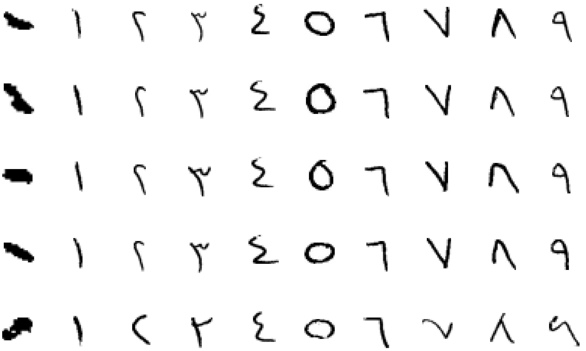

Arabic Handwritten Digits Dataset
Abstract
In recent years, handwritten digits recognition has been an important area due to its applications in several fields. This work is focusing on the recognition part of handwritten Arabic digits recognition that face several challenges, including the unlimited variation in human handwriting and the large public databases. The paper provided a deep learning technique that can be effectively apply to recognizing Arabic handwritten digits. LeNet-5, a Convolutional Neural Network (CNN) trained and tested MADBase database (Arabic handwritten digits images) that contain 60000 training and 10000 testing images. A comparison is held amongst the results, and it is shown by the end that the use of CNN was leaded to significant improvements across different machine-learning classification algorithms. The Convolutional Neural Network was trained and tested MADBase database (Arabic handwritten digits images) that contain 60000 training and 10000 testing images. Moreover, the CNN is giving an average recognition accuracy of 99.15%.
Dataset
Download dataset from Kaggle
Reference
CNN for Handwritten Arabic Digits Recognition Based on LeNet-5 http://link.springer.com/chapter/10.1007/978-3-319-48308-5_54 Ahmed El-Sawy, Hazem El-Bakry, Mohamed Loey Proceedings of the International Conference on Advanced Intelligent Systems and Informatics 2016 Volume 533 of the series Advances in Intelligent Systems and Computing pp 566-575